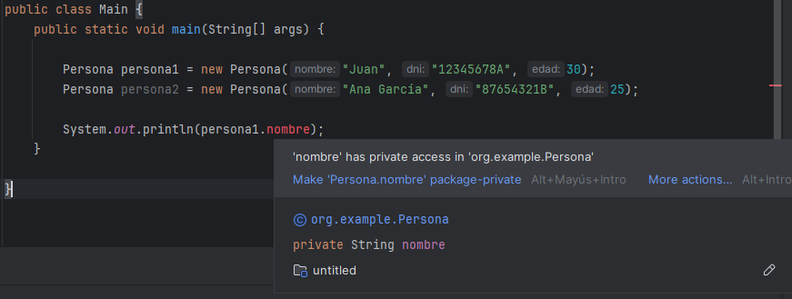
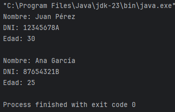

Tanto los atributos como los métodos y constructores de las clases y objetos tienen una determinada visibilidad, que indica qué otros objetos pueden acceder a dichos atributos o métodos. Dependiendo del tipo de acceso, tenemos fundamentalmente tres tipos de visibilidad:
• (+) Pública (public): se puede acceder a ellos desde cualquier objeto del sistema
• (-) Privada (private): sólo pueden ser accedidos desde el propio objeto
• (#) Protegida (protected): se puede acceder a ellos desde el propio objeto o cualquier subtipo del mismo (mediante herencia).
Lo más habitual y recomendable es que los atributos tengan una visibilidad privada (o protegida, en el caso de la herencia que veremos en el tema siguiente), y que los métodos, salvo aquellos de uso interno de cada clase, sean públicos.
public class Persona {
//atributos con visibilidad protegida
private String nombre;
private String dni;
private int edad;
//constructor de la clase Persona
public Persona(String nombre, String dni, int edad) {
this.nombre = nombre;
this.dni = dni;
this.edad = edad;
}
//método para mostrar la información de la persona
public void mostrarInformacion() {
System.out.println("Nombre: " + nombre);
System.out.println("DNI: " + dni);
System.out.println("Edad: " + edad);
}
}
De esta forma, desde el main ya no podremos acceder a los atributos directamente para, por ejemplo, imprimirlos sin pasar por el método mostrarInformacion() obligatoriamente:

public class Main {
public static void main(String[] args) {
//creación de dos objetos Persona
Persona persona1 = new Persona("Juan Pérez", "12345678A", 30);
Persona persona2 = new Persona("Ana García", "87654321B", 25);
//mostrando la información de las dos personas mediante el método mostrarInformacion()
persona1.mostrarInformacion();
System.out.println();
persona2.mostrarInformacion();
}
}
Se establece así para que el acceso y la modificación de los valores de los atributos solamente pueda hacerse de forma controlada desde dentro de la misma clase, y no desde cualquier parte del proyecto. En eso consiste el encapsulamiento que veremos a continuación.
Vale... ¿y por qué pones también "-", "+" y "#"?
En los diagramas UML (Lenguaje Unificado de Modelado) que haremos dentro de unos días, los modificadores de acceso se representan con símbolos. El modificador private se representa con un signo -, el public con un + y el protected con un #. Para que vayas familiarizándote:
+--------------+
| Persona |
+--------------+
| - nombre |
| - dni |
| - edad |
+--------------+
| + mostrarInfo() |
+--------------+